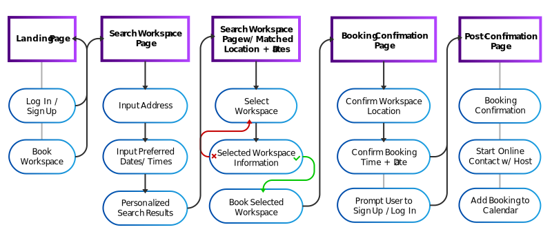
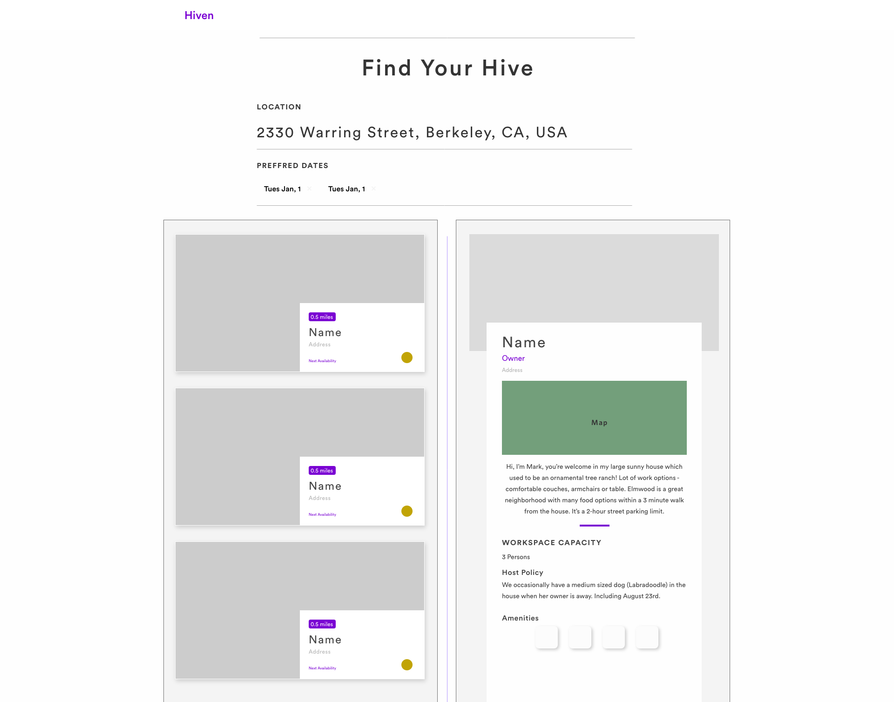

This redesign case study examine's user behavior within the desktop product Hiven, and explores and tests the implementation of various design solutions. This case study is a personal project that I completed to get a better understanding of desktop UI/UX design.
Stumbling around the web, I found an interesting Berkeley based service that allows users to find or host co-working spaces within their personal homes. I found this concept particularly intriguing as it seems very akin to popular services such as Uber or Airbnb, utilizing the internet and the current “gig economy” to allow users to discover new co-working spaces besides local coffee shops, public buildings or their personal homes. After exploring the site and the product, I was inspired to deconstruct and redesign the Hīven desktop experience. Additionally, I found the current branding of the site to be interesting and wanted to develop it further. Note: During the write up of this case study, Hiven has rebranded to COBO and changed many aspects of their product. As a result, I was unable to collect screenrecords of the site that were used for the user interviews and user testing.
In an ideal world, I would have a few dozen interviewees lined up to participate, comprehensive user data sorted out for me, and a small team to bounce ideas around with; unfortunately we’re still working on achieving an ideal world. So instead I want to highlight limitations that effected my design abilities for this practice:
Hīven is still in a relatively early stage of production, thus the main challenge of design practice was to:
Secondary goals for this design practice were to:
A core objective of this design practice is to develop an understanding of what users are looking for from Hīven, and to a deeper extent than just “a new co-working space”. I sought to understand what users wanted and needed from a co-working space, and how house experience differentiated itself from cafés and other work places. Additionally, I wanted to conduct testing to see how users responded to the current Hīven desktop application and if any UI improvements could be made. A large barrier to my research process was not having access to Hīven's user research or quantitive data, making it hard to collect user data of people who have used Hiven unprompted by me. The research techniques that I implement for this design challenge are as follows:
Not having access to Hīven’s user data, I decided to create and distribute a survey to get an understanding of who the user demographic is, and how they interact with different workspaces. After about 2 weeks, I was able to collect roughly 20 responses. The responses varied, but considering that the main mode of distribution was word of mouth through my school friends, I noted a particular skew towards the needs of college student. If you wish to fill out the survey, I’d be delighted to have more responses!
The response I got for user interviews was much smaller than the surveys, and the population could be considered more biased. To find participants, I first asked my friends and got a somewhat decent response, with 8 people offering their time. This demographic was interesting because they were primarily students with access to the university’s plethora of libraries; a resource they noted was poor, but was easily accessible and thus was their primary location of working or studying. The second group of interviewees were a handful of random coffeeshop goers whose coffee I offered to purchase in return for a quick interview.
Having the user demographic information from the survey, and the personal experience surrounding user interactions with workspaces from the user interviews, I could create personas that acted as more tangible users whose needs I could design for. The three personas that arose from the research were:

With and understanding of what users need from a workspace, I conducted user testing of Hīven’s desktop application to deduce how well it performs at finding users their ideal workspace home away from home. As a disclaimer, I was unable to find users willing to undergo the full Hīven experience; the user testing that I conducted was limited to interaction with the desktop application and booking of a “Hive” workspace, but users never took steps beyond that. Additionally, the testing group consisted of close friends of mine who offered to test the product and allowed me to interview them afterwards.
When looking at Hiven’s current landing page, it is difficult for new users to find a link to explore the actual web application. What users are instead exposed to, are “call to actions” to either log in or sign up. While it is not bad to have users sign up before completing a action that requires an account, when the user is completely unaware of if the offered product is available in the area often disuades them from continuing. Additionally, users would be disappointed when they go through the whole sign up process, only to find that the service is not available in the area; thus leading to a reduced return rate once the service is available.
The current workspace search screen confronts the user with large loads of information and does not provide an efficient way to process all of it. When the user arrives at the page, they are immediately shown a map with highlighted locations and a list of different workplaces. Users are not prompted to input an address, and as a result often start viewing the different hives only to realize that the entries they have selected are not within their desired location or are not available on their preferred days.
Additionally, the map provided on the search page can act as a distraction, showing locations but not having a correlation to the search entries. It is up to the user to deduce that the correlation between the map locations and the entries are numerical.
Navigation through the different results is also an issue. The placards for the search entry do not provide much information besides the name of location and a picture. This requires users to open up the full information page to get even a semblance of what the workspace offers. This process can be time consuming as users must either:
From the user interviews, it seems that a large deciding factor in choosing a workspace is how personable the experience is and if forging a compatible co-working environment is possible. Hiven’s ability of allowing users to scout out social settings should put it at an advantage compared to quiet libraries or sporadic coffee shops; but unfortunately there is no active feature of implementation that allows users to interact with host prior to the booked date. Instead, when users are finished confirming their workspace, they do not interact with the host until the time and day of the booking, this leads to days of blank space and anticipation.
Imagine showing up at a stranger’s house with absolutely no prior interactions, or going into your workplace and not interacting with co-workers. Even if they're expecting you, there is bound to be some awkwardness. This usually isn't an issue for other “material sharing platforms” like Uber or Airbnb as car rides usually take between 10-30 minutes, and home owners are not present during the guest’s stay. But in a co-working space, its usually a good idea to be comfortable with the person that you will be sharing the space with for a few hours.
Based off of my analysis and assumptions, below are the following goals I am striving for with my redesign:
With an understanding of where I can start making design changes, I started ideating and sketching possible solutions that met the design goals that I have just laid out.
As mentioned earlier, the desktop application’s current user flow has many barriers preventing new users from easily finding nearby workspaces that Hiven can provide. The user flow requires users to create an account and log in before viewing available workspaces, dissuading users from using the product. Additionally, the redirection navigation for workspace search is time consuming and inefficient.

For the revised user flow, I implemented a flow that has more guided action. This flow prompts users to complete more required actions, but results in the user being exposed to more relevant results; thus reducing the active effort required. In this case, users only really need to identify if they like the workspace environment as the location and dates have already been filtered. Additionally, the revised flow exposes users to the “book workspace” action in a more accessible way, by not requiring a sign up prior to searching for a workspace. Instead, users will be prompted to sign up or log in after they have found a suitable workspace.
Having identified earlier that the issue with the current workplace search page was having too much information that confused users while also not providing information important to decision making; I set off to deduce what information the search entry cards should display. They included:
I made quick sketches that were translated into digital mockups. It was important for these cards to take into account space and the visual representation of content as to not confuse users. Taking up too much space would unnecessarily lengthen the users’ search process, while the use of abstract representation will hinder the users’ decision making.
Looking at the current user flow, the workplaces search process implements too much redirection and places too much burden on users to identify if the workplaces match their requirements. As a solution to these issues, I mocked up new layouts that consolidated all the actions onto one webpage.
The dual column layout allows users to quickly view and switch between different workspaces with out needing to navigate back and forth between two different web pages or opening up multiple tabs. The ability to mark locations as favorites ensures that users won't forget which workspaces were top contenders. Furthermore, the addition of a filter option ensured that users who had specific amenities in mind didn't waste time looking at irrelevant workspaces.
When exploring the design opportunity of creating a post-booking experience, it was identified that a personal touch was missing, users were just left waiting until the day of their booking before being exposed to who their host would be. The goal of the post-booking interaction isn’t only to start a connection between the host and user, but to also allowing early contact to flesh out details before the day of the booking. Drawing inspiration from Uber’s post booking interactions, I decided that some important aspects that could act as conversation starters between the two parties are:
Additionally, implementing a messaging system between the host and user allows a form of contact that the product is currently missing. The messaging system would need to be more specific and extend to more than just small talk. The messaging system would work as the following:
Having finished the nitty-gritty design thinking and early stage mock-ups, its time to get to making a fully fleshed out product. The aim of this step in the design process is clean up the edges of the mid-fidelity mock-ups, being particularly mindful of how colors, space and element position influence the user's experience. An example of these design decisions are the use of different colors to denote active and inactive states, or to guide users to complete a desirable action.
One of the secondary goals for this design challenge was to create a design identity for the product Hiven. To accomplish this I:

From the previous analysis of the current landing page, I wanted the newly redesigned landing page to:

The final mockup for the workplace search condensed what used to be a multiple page action into one webpage. From the iterations and conducting a few MOST tests, I determined that at the best design practices were to:
With a new user flow, the new workspace search page functions must more efficiently. The new process is as follows:
When designing the workspace information panel, I wanted to make sure that users were presented with key decision making information first. Do address this, I made the following design solutions:
Once the user has indicated the booking preferences, they’ll be directed to a confirmation page. This will reduce the cases of users needing to cancel a booking because of a mistake. Once the confirmation is complete, they will have instant confirmation and be allowed to interact with their host.Design aspects that have been implemented into this experience are as follows:
Reaching the end of the design exercise, I wanted to evaluate how well of a job I did at meeting the goals that I had laid out at the beginning.
A main goal of this design challenge was to “Create an understanding of users’ needs and interactions with the Hiven desktop application…” and I would argue that I was able to successfully do this. Through my user interviews and the surveys, I was able to really visualize what users’ needed from a workspace. Taking the observations I had from them, I deduced insights that guided me while I created personas that did a good job representing them. One the other hand, my understanding of the users’ interactions with the Hive desktop leads more to be desired. Unlike my interviews which I recorded, I merely took notes on how the users’ interacted with the desktop application. Although I was able to deduce some insights from this, I may have missed some key observations that could’ve been picked up on later reviews.
Looking at the secondary goals that I laid out; I think I did an “okay” job at reaching them. In regards to the first goal: “create a strong and recognizable branding for Hiven”, I am happy with what I accomplished but wish I did more. When creating the branding for Hiven, I mainly relied on the colors that were previously used on the site, with the addition of some secondary colors and gradients. Although I created a style guide, I did not create enough guides for all the different possible use cases or set any standards for button use. In the future, I would like to create a sort of design system, that not only provides uniformity but also conveys the feeling of the product.
The second goal: “understand how microinteractions affect user experience” is one that I felt I fell short on. Although I did create many micro interactions within the product, I didn’t conduct any user testing to see how users’ would respond to them. Additionally, I felt that the lack of a design system resulted in inconsistent animations, resulting in a feeling of inconsistency thought the product.
The third goal I laid out: “implement human factor practices learned from previous classes” was able to be accomplished, but I found it difficult to document explicitly within my case study without it taking too much space. Throughout the design process, I applied what I learned from my IEOR class (Industrial Design and Human Factors) specifically when looking at how users interacted with the digital space and making sure that my high fidelity mock ups aligned with [].